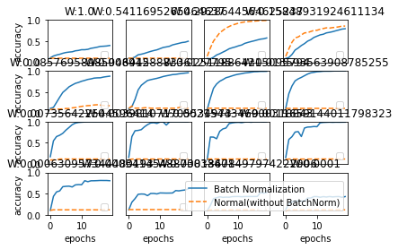

7.1. Batch Normalization¶
利点:
学習を早く進行させることができる
初期値にそれほど依存しない
あんまり凝って初期値を設定する必要がない
過学習を抑制する
強制的にノーマライズ(0 ~ 1)を行う。 実際には、正規化後に多少値をいじる。それがスケーリング(乗算)とシフト(加算)。
このスケーリングとシフトも学習対象で、学習させながら適宜調整する。
[1]:
import sys, os
sys.path.append(os.path.abspath(os.path.join('..', 'sample')))
import numpy as np
import matplotlib.pyplot as plt
from dataset.mnist import load_mnist
from common.multi_layer_net_extend import MultiLayerNetExtend
from common.optimizer import SGD, Adam
(x_train, t_train), (x_test, t_test) = load_mnist(normalize=True)
# 学習データを削減
x_train = x_train[:1000]
t_train = t_train[:1000]
max_epochs = 20
train_size = x_train.shape[0]
batch_size = 100
learning_rate = 0.01
def __train(weight_init_std):
bn_network = MultiLayerNetExtend(input_size=784, hidden_size_list=[100, 100, 100, 100, 100], output_size=10,
weight_init_std=weight_init_std, use_batchnorm=True)
network = MultiLayerNetExtend(input_size=784, hidden_size_list=[100, 100, 100, 100, 100], output_size=10,
weight_init_std=weight_init_std)
optimizer = SGD(lr=learning_rate)
train_acc_list = []
bn_train_acc_list = []
iter_per_epoch = max(train_size / batch_size, 1)
epoch_cnt = 0
for i in range(1000000000):
batch_mask = np.random.choice(train_size, batch_size)
x_batch = x_train[batch_mask]
t_batch = t_train[batch_mask]
for _network in (bn_network, network):
grads = _network.gradient(x_batch, t_batch)
optimizer.update(_network.params, grads)
if i % iter_per_epoch == 0:
train_acc = network.accuracy(x_train, t_train)
bn_train_acc = bn_network.accuracy(x_train, t_train)
train_acc_list.append(train_acc)
bn_train_acc_list.append(bn_train_acc)
print("epoch:" + str(epoch_cnt) + " | " + str(train_acc) + " - " + str(bn_train_acc))
epoch_cnt += 1
if epoch_cnt >= max_epochs:
break
return train_acc_list, bn_train_acc_list
# 3.グラフの描画==========
weight_scale_list = np.logspace(0, -4, num=16)
x = np.arange(max_epochs)
for i, w in enumerate(weight_scale_list):
print( "============== " + str(i+1) + "/16" + " ==============")
train_acc_list, bn_train_acc_list = __train(w)
plt.subplot(4,4,i+1)
plt.title("W:" + str(w))
if i == 15:
plt.plot(x, bn_train_acc_list, label='Batch Normalization', markevery=2)
plt.plot(x, train_acc_list, linestyle = "--", label='Normal(without BatchNorm)', markevery=2)
else:
plt.plot(x, bn_train_acc_list, markevery=2)
plt.plot(x, train_acc_list, linestyle="--", markevery=2)
plt.ylim(0, 1.0)
if i % 4:
plt.yticks([])
else:
plt.ylabel("accuracy")
if i < 12:
plt.xticks([])
else:
plt.xlabel("epochs")
plt.legend(loc='lower right')
plt.show()
============== 1/16 ==============
epoch:0 | 0.097 - 0.108
C:\Users\anzuy\Project\ManteraStudio-ReadingCircle-DeepLearningFromScratch\source\sample\common\multi_layer_net_extend.py:101: RuntimeWarning: overflow encountered in square
weight_decay += 0.5 * self.weight_decay_lambda * np.sum(W**2)
C:\Users\anzuy\Project\ManteraStudio-ReadingCircle-DeepLearningFromScratch\source\sample\common\multi_layer_net_extend.py:101: RuntimeWarning: invalid value encountered in double_scalars
weight_decay += 0.5 * self.weight_decay_lambda * np.sum(W**2)
epoch:1 | 0.097 - 0.15
epoch:2 | 0.097 - 0.174
epoch:3 | 0.097 - 0.191
epoch:4 | 0.097 - 0.215
epoch:5 | 0.097 - 0.233
epoch:6 | 0.097 - 0.243
epoch:7 | 0.097 - 0.25
epoch:8 | 0.097 - 0.273
epoch:9 | 0.097 - 0.282
epoch:10 | 0.097 - 0.299
epoch:11 | 0.097 - 0.299
epoch:12 | 0.097 - 0.308
epoch:13 | 0.097 - 0.332
epoch:14 | 0.097 - 0.344
epoch:15 | 0.097 - 0.359
epoch:16 | 0.097 - 0.377
epoch:17 | 0.097 - 0.381
epoch:18 | 0.097 - 0.387
No handles with labels found to put in legend.
epoch:19 | 0.097 - 0.399
============== 2/16 ==============
epoch:0 | 0.097 - 0.097
C:\Users\anzuy\Project\ManteraStudio-ReadingCircle-DeepLearningFromScratch\source\sample\common\multi_layer_net_extend.py:101: RuntimeWarning: overflow encountered in square
weight_decay += 0.5 * self.weight_decay_lambda * np.sum(W**2)
C:\Users\anzuy\Project\ManteraStudio-ReadingCircle-DeepLearningFromScratch\source\sample\common\multi_layer_net_extend.py:101: RuntimeWarning: invalid value encountered in double_scalars
weight_decay += 0.5 * self.weight_decay_lambda * np.sum(W**2)
c:\users\anzuy\project\manterastudio-readingcircle-deeplearningfromscratch\.venv\lib\site-packages\numpy\core\fromnumeric.py:87: RuntimeWarning: overflow encountered in reduce
return ufunc.reduce(obj, axis, dtype, out, **passkwargs)
epoch:1 | 0.097 - 0.097
epoch:2 | 0.097 - 0.127
epoch:3 | 0.097 - 0.18
epoch:4 | 0.097 - 0.193
epoch:5 | 0.097 - 0.212
epoch:6 | 0.097 - 0.236
epoch:7 | 0.097 - 0.259
epoch:8 | 0.097 - 0.279
epoch:9 | 0.097 - 0.296
epoch:10 | 0.097 - 0.324
epoch:11 | 0.097 - 0.352
epoch:12 | 0.097 - 0.365
epoch:13 | 0.097 - 0.38
epoch:14 | 0.097 - 0.413
epoch:15 | 0.097 - 0.431
epoch:16 | 0.097 - 0.449
epoch:17 | 0.097 - 0.468
epoch:18 | 0.097 - 0.477
No handles with labels found to put in legend.
epoch:19 | 0.097 - 0.499
============== 3/16 ==============
epoch:0 | 0.144 - 0.09
epoch:1 | 0.339 - 0.084
epoch:2 | 0.503 - 0.121
epoch:3 | 0.601 - 0.175
epoch:4 | 0.701 - 0.204
epoch:5 | 0.754 - 0.242
epoch:6 | 0.811 - 0.278
epoch:7 | 0.847 - 0.321
epoch:8 | 0.882 - 0.345
epoch:9 | 0.903 - 0.365
epoch:10 | 0.927 - 0.391
epoch:11 | 0.942 - 0.41
epoch:12 | 0.956 - 0.449
epoch:13 | 0.961 - 0.471
epoch:14 | 0.968 - 0.491
epoch:15 | 0.974 - 0.509
epoch:16 | 0.98 - 0.529
epoch:17 | 0.986 - 0.548
epoch:18 | 0.988 - 0.557
No handles with labels found to put in legend.
epoch:19 | 0.991 - 0.576
============== 4/16 ==============
epoch:0 | 0.143 - 0.091
epoch:1 | 0.318 - 0.115
epoch:2 | 0.475 - 0.186
epoch:3 | 0.577 - 0.291
epoch:4 | 0.601 - 0.339
epoch:5 | 0.648 - 0.398
epoch:6 | 0.696 - 0.443
epoch:7 | 0.703 - 0.501
epoch:8 | 0.729 - 0.535
epoch:9 | 0.755 - 0.588
epoch:10 | 0.758 - 0.619
epoch:11 | 0.782 - 0.649
epoch:12 | 0.799 - 0.664
epoch:13 | 0.816 - 0.696
epoch:14 | 0.809 - 0.709
epoch:15 | 0.821 - 0.725
epoch:16 | 0.828 - 0.746
epoch:17 | 0.84 - 0.765
epoch:18 | 0.857 - 0.786
No handles with labels found to put in legend.
epoch:19 | 0.857 - 0.794
============== 5/16 ==============
epoch:0 | 0.089 - 0.113
epoch:1 | 0.092 - 0.136
epoch:2 | 0.095 - 0.256
epoch:3 | 0.096 - 0.377
epoch:4 | 0.1 - 0.491
epoch:5 | 0.11 - 0.554
epoch:6 | 0.111 - 0.623
epoch:7 | 0.125 - 0.665
epoch:8 | 0.133 - 0.704
epoch:9 | 0.148 - 0.726
epoch:10 | 0.16 - 0.754
epoch:11 | 0.171 - 0.774
epoch:12 | 0.178 - 0.797
epoch:13 | 0.182 - 0.81
epoch:14 | 0.194 - 0.828
epoch:15 | 0.199 - 0.834
epoch:16 | 0.191 - 0.836
epoch:17 | 0.181 - 0.853
epoch:18 | 0.177 - 0.864
No handles with labels found to put in legend.
epoch:19 | 0.176 - 0.874
============== 6/16 ==============
epoch:0 | 0.113 - 0.11
epoch:1 | 0.169 - 0.155
epoch:2 | 0.118 - 0.326
epoch:3 | 0.12 - 0.55
epoch:4 | 0.117 - 0.658
epoch:5 | 0.127 - 0.717
epoch:6 | 0.131 - 0.772
epoch:7 | 0.117 - 0.791
epoch:8 | 0.117 - 0.807
epoch:9 | 0.117 - 0.823
epoch:10 | 0.12 - 0.843
epoch:11 | 0.117 - 0.866
epoch:12 | 0.117 - 0.882
epoch:13 | 0.117 - 0.896
epoch:14 | 0.117 - 0.911
epoch:15 | 0.117 - 0.916
epoch:16 | 0.132 - 0.929
epoch:17 | 0.158 - 0.938
epoch:18 | 0.117 - 0.947
No handles with labels found to put in legend.
epoch:19 | 0.117 - 0.954
============== 7/16 ==============
epoch:0 | 0.117 - 0.089
epoch:1 | 0.117 - 0.355
epoch:2 | 0.116 - 0.588
epoch:3 | 0.117 - 0.689
epoch:4 | 0.117 - 0.754
epoch:5 | 0.117 - 0.793
epoch:6 | 0.117 - 0.837
epoch:7 | 0.117 - 0.858
epoch:8 | 0.117 - 0.883
epoch:9 | 0.117 - 0.905
epoch:10 | 0.116 - 0.921
epoch:11 | 0.116 - 0.933
epoch:12 | 0.116 - 0.949
epoch:13 | 0.116 - 0.956
epoch:14 | 0.116 - 0.968
epoch:15 | 0.116 - 0.979
epoch:16 | 0.116 - 0.981
epoch:17 | 0.116 - 0.987
epoch:18 | 0.116 - 0.987
No handles with labels found to put in legend.
epoch:19 | 0.117 - 0.989
============== 8/16 ==============
epoch:0 | 0.116 - 0.115
epoch:1 | 0.116 - 0.46
epoch:2 | 0.116 - 0.642
epoch:3 | 0.116 - 0.763
epoch:4 | 0.116 - 0.811
epoch:5 | 0.116 - 0.845
epoch:6 | 0.116 - 0.885
epoch:7 | 0.116 - 0.924
epoch:8 | 0.116 - 0.952
epoch:9 | 0.116 - 0.965
epoch:10 | 0.116 - 0.978
epoch:11 | 0.116 - 0.983
epoch:12 | 0.116 - 0.991
epoch:13 | 0.116 - 0.992
epoch:14 | 0.116 - 0.992
epoch:15 | 0.116 - 0.995
epoch:16 | 0.116 - 0.998
epoch:17 | 0.116 - 0.998
epoch:18 | 0.116 - 0.999
No handles with labels found to put in legend.
epoch:19 | 0.116 - 0.999
============== 9/16 ==============
epoch:0 | 0.094 - 0.172
epoch:1 | 0.097 - 0.546
epoch:2 | 0.099 - 0.648
epoch:3 | 0.117 - 0.679
epoch:4 | 0.117 - 0.725
epoch:5 | 0.117 - 0.8
epoch:6 | 0.117 - 0.863
epoch:7 | 0.117 - 0.928
epoch:8 | 0.117 - 0.965
epoch:9 | 0.117 - 0.981
epoch:10 | 0.117 - 0.987
epoch:11 | 0.117 - 0.992
epoch:12 | 0.117 - 0.996
epoch:13 | 0.117 - 0.997
epoch:14 | 0.117 - 0.996
epoch:15 | 0.117 - 0.997
epoch:16 | 0.117 - 0.998
epoch:17 | 0.117 - 0.999
epoch:18 | 0.117 - 0.999
No handles with labels found to put in legend.
epoch:19 | 0.117 - 0.999
============== 10/16 ==============
epoch:0 | 0.099 - 0.155
epoch:1 | 0.116 - 0.648
epoch:2 | 0.116 - 0.785
epoch:3 | 0.117 - 0.793
epoch:4 | 0.117 - 0.811
epoch:5 | 0.116 - 0.877
epoch:6 | 0.116 - 0.929
epoch:7 | 0.116 - 0.968
epoch:8 | 0.116 - 0.974
epoch:9 | 0.117 - 0.958
epoch:10 | 0.117 - 0.99
epoch:11 | 0.117 - 0.991
epoch:12 | 0.117 - 0.919
epoch:13 | 0.117 - 0.992
epoch:14 | 0.117 - 0.996
epoch:15 | 0.117 - 0.997
epoch:16 | 0.117 - 0.997
epoch:17 | 0.117 - 0.997
epoch:18 | 0.117 - 0.995
No handles with labels found to put in legend.
epoch:19 | 0.117 - 0.997
============== 11/16 ==============
epoch:0 | 0.117 - 0.099
epoch:1 | 0.117 - 0.637
epoch:2 | 0.117 - 0.635
epoch:3 | 0.117 - 0.596
epoch:4 | 0.117 - 0.772
epoch:5 | 0.117 - 0.828
epoch:6 | 0.117 - 0.85
epoch:7 | 0.116 - 0.954
epoch:8 | 0.116 - 0.971
epoch:9 | 0.117 - 0.981
epoch:10 | 0.117 - 0.984
epoch:11 | 0.117 - 0.977
epoch:12 | 0.116 - 0.99
epoch:13 | 0.116 - 0.994
epoch:14 | 0.116 - 0.987
epoch:15 | 0.116 - 0.995
epoch:16 | 0.116 - 0.995
epoch:17 | 0.116 - 0.996
epoch:18 | 0.116 - 0.991
No handles with labels found to put in legend.
epoch:19 | 0.116 - 0.997
============== 12/16 ==============
epoch:0 | 0.105 - 0.151
epoch:1 | 0.117 - 0.579
epoch:2 | 0.117 - 0.644
epoch:3 | 0.116 - 0.754
epoch:4 | 0.116 - 0.765
epoch:5 | 0.116 - 0.648
epoch:6 | 0.116 - 0.85
epoch:7 | 0.116 - 0.872
epoch:8 | 0.116 - 0.875
epoch:9 | 0.117 - 0.885
epoch:10 | 0.117 - 0.881
epoch:11 | 0.116 - 0.973
epoch:12 | 0.117 - 0.982
epoch:13 | 0.117 - 0.985
epoch:14 | 0.117 - 0.988
epoch:15 | 0.117 - 0.985
epoch:16 | 0.117 - 0.988
epoch:17 | 0.117 - 0.987
epoch:18 | 0.117 - 0.988
No handles with labels found to put in legend.
epoch:19 | 0.117 - 0.989
============== 13/16 ==============
epoch:0 | 0.105 - 0.103
epoch:1 | 0.117 - 0.435
epoch:2 | 0.117 - 0.541
epoch:3 | 0.117 - 0.564
epoch:4 | 0.117 - 0.664
epoch:5 | 0.117 - 0.672
epoch:6 | 0.117 - 0.676
epoch:7 | 0.117 - 0.657
epoch:8 | 0.116 - 0.706
epoch:9 | 0.116 - 0.712
epoch:10 | 0.116 - 0.709
epoch:11 | 0.116 - 0.805
epoch:12 | 0.116 - 0.782
epoch:13 | 0.116 - 0.803
epoch:14 | 0.117 - 0.804
epoch:15 | 0.116 - 0.807
epoch:16 | 0.117 - 0.811
epoch:17 | 0.117 - 0.81
epoch:18 | 0.117 - 0.81
No handles with labels found to put in legend.
epoch:19 | 0.117 - 0.805
============== 14/16 ==============
epoch:0 | 0.117 - 0.118
epoch:1 | 0.117 - 0.298
epoch:2 | 0.117 - 0.382
epoch:3 | 0.117 - 0.484
epoch:4 | 0.117 - 0.491
epoch:5 | 0.117 - 0.488
epoch:6 | 0.117 - 0.452
epoch:7 | 0.117 - 0.503
epoch:8 | 0.117 - 0.504
epoch:9 | 0.117 - 0.493
epoch:10 | 0.117 - 0.516
epoch:11 | 0.117 - 0.514
epoch:12 | 0.117 - 0.512
epoch:13 | 0.117 - 0.513
epoch:14 | 0.117 - 0.515
epoch:15 | 0.117 - 0.572
epoch:16 | 0.117 - 0.565
epoch:17 | 0.117 - 0.577
epoch:18 | 0.117 - 0.586
No handles with labels found to put in legend.
epoch:19 | 0.117 - 0.609
============== 15/16 ==============
epoch:0 | 0.097 - 0.097
epoch:1 | 0.116 - 0.22
epoch:2 | 0.116 - 0.383
epoch:3 | 0.116 - 0.403
epoch:4 | 0.116 - 0.425
epoch:5 | 0.116 - 0.412
epoch:6 | 0.116 - 0.418
epoch:7 | 0.116 - 0.415
epoch:8 | 0.116 - 0.429
epoch:9 | 0.117 - 0.431
epoch:10 | 0.117 - 0.432
epoch:11 | 0.117 - 0.426
epoch:12 | 0.117 - 0.431
epoch:13 | 0.117 - 0.432
epoch:14 | 0.117 - 0.431
epoch:15 | 0.117 - 0.432
epoch:16 | 0.117 - 0.433
epoch:17 | 0.117 - 0.524
epoch:18 | 0.117 - 0.51
No handles with labels found to put in legend.
epoch:19 | 0.117 - 0.525
============== 16/16 ==============
epoch:0 | 0.087 - 0.125
epoch:1 | 0.117 - 0.257
epoch:2 | 0.117 - 0.305
epoch:3 | 0.117 - 0.324
epoch:4 | 0.117 - 0.325
epoch:5 | 0.117 - 0.323
epoch:6 | 0.117 - 0.324
epoch:7 | 0.117 - 0.396
epoch:8 | 0.117 - 0.396
epoch:9 | 0.117 - 0.43
epoch:10 | 0.117 - 0.43
epoch:11 | 0.117 - 0.414
epoch:12 | 0.117 - 0.429
epoch:13 | 0.117 - 0.42
epoch:14 | 0.117 - 0.431
epoch:15 | 0.117 - 0.422
epoch:16 | 0.117 - 0.428
epoch:17 | 0.117 - 0.431
epoch:18 | 0.117 - 0.413
epoch:19 | 0.117 - 0.43

一部ではバッチノーマライズをしないほうが良いと出ているが、全体を見るとバッチノーマライゼーションを入れたほうが学習しているのがわかる。